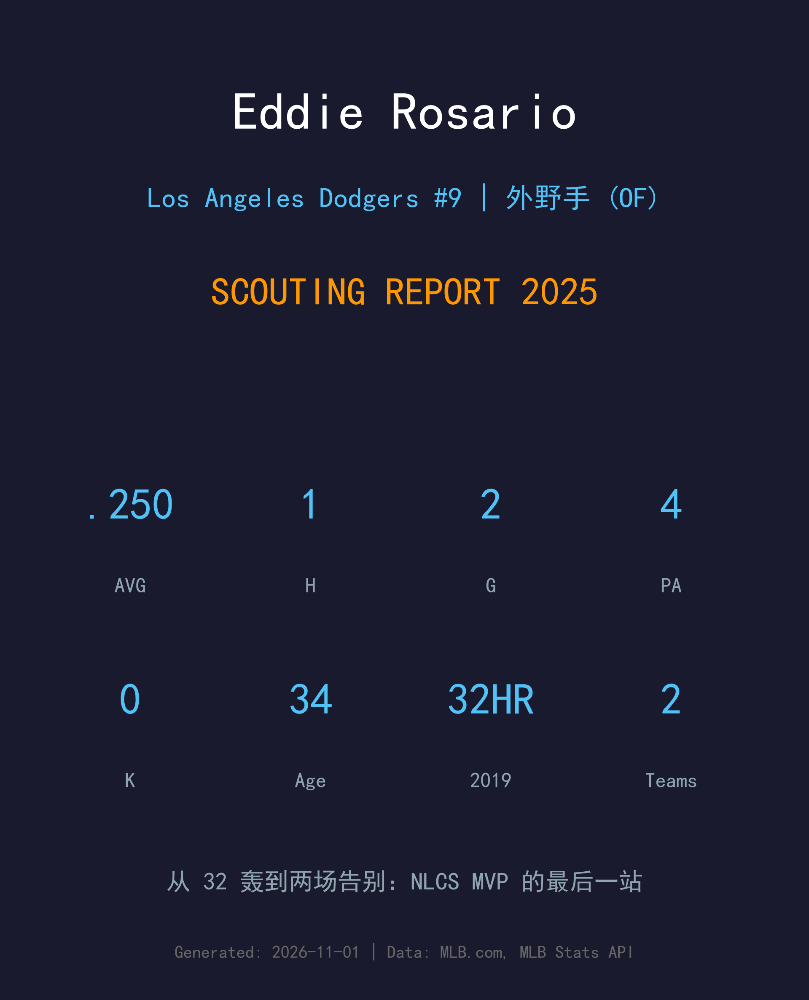
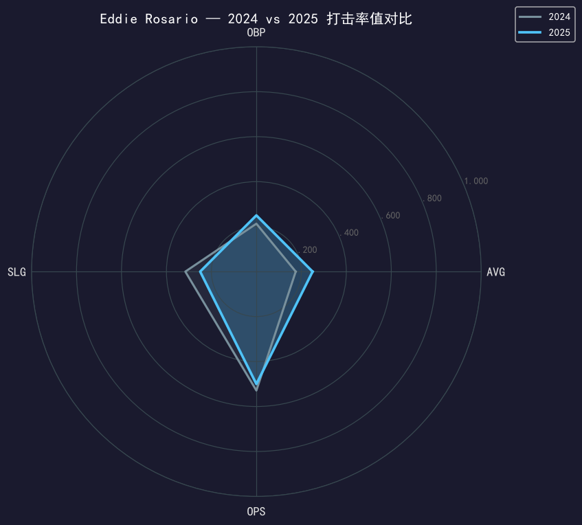
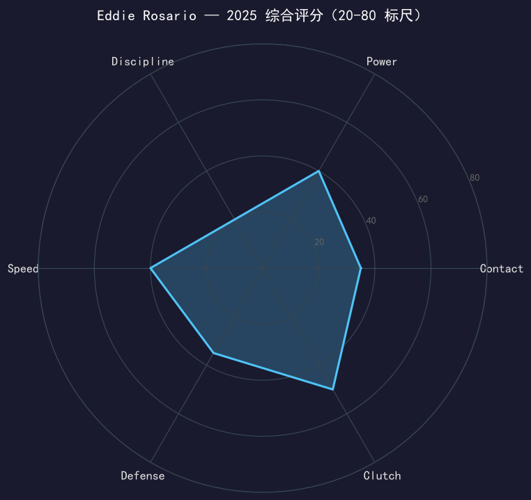

Los Angeles Dodgers #9 | 外野手 | 左打 | 从 32 轰到两场告别：NLCS MVP 的最后一站

⚠️ 极小样本警告：本报告基于 2 场 / 4 个打席的道奇段数据——这是 62 人名单中叙事重于数据的极端案例。
Eddie Rosario 的 2025 年道奇段只有 48 小时：2 月 16 日签小联盟合约 → 4 月 18 日选入大联盟 → 出赛 2 场（4 打数 1 安打，零三振）→ 4 月 20 日被 DFA → 4 月 25 日 outright 至 3A。然后他回到那个最熟悉的城市——亚特兰大——在赛季尾声又披勇士战袍出赛 3 场，用 4 个打席向 Truist 球场的观众挥手作别。
评价 Rosario 需要拉开时间轴：2019 年他是双城的 cleanup 重炮（32 轰 109 打点），2021 年他扛着亚特兰大走过国联冠军赛（NLCS MVP）并随队赢得世界大赛——那是波多黎各棒球史上最高光的个人章节之一。此后两年，他的 OPS 从 .755（2023）滑到 .529（2024），2025 年只能靠小联盟合约续命。道奇的 2 场不是签下一位明星，是给一位英雄发最后一张大联盟通行证。
从 2025 年 11 月的视角看，34 岁的 Rosario 站在退役的门槛上：生涯 169 轰、一座世界大赛冠军、一枚 NLCS MVP 奖杯。如果这 5 场是终点，那么这个终点配得上他职业生涯的每一个高潮。
明尼苏达双城的巅峰赛季：137 场 .276/.300/.500、32 支全垒打、109 分打点——双城打线的 cleanup 重炮，美联左外野最具威胁的棒子之一。
被交易到亚特兰大后单季合计 14 轰，季后赛打出传奇表现——国联冠军赛 MVP，随后随勇士夺得世界大赛冠军。波多黎各的国庆日都没那周疯狂。
连续两年 24+ 轰：2017 年 .290/.328/.507 27 轰 78 打点，2018 年 24 轰 77 打点——那两年的双城打线里，他的名字永远写在第三或第四棒。

| 赛季 | 队 | G | PA | AVG | OBP | SLG | OPS | HR | RBI | BB | SO |
|---|---|---|---|---|---|---|---|---|---|---|---|
| 2019 | MIN | 137 | 590 | .276 | .300 | .500 | .800 | 32 | 109 | 22 | 86 |
| 2021 | CLE+ATL | 111 | 412 | .259 | .305 | .435 | .740 | 14 | 62 | 26 | 61 |
| 2024 | WSN+ATL | 91 | 319 | .175 | .213 | .316 | .529 | 10 | 35 | 16 | 77 |
| 2025 | LAD | 2 | 4 | .250 | .250 | .250 | .500 | 0 | 0 | 0 | 0 |
把四行放在一起，就是一部完整的「重炮老化史」：2019 的 .800 OPS 是巅峰，2021 的 .740 是冠军年的余温，2024 的 .529 是断崖。值得玩味的是 2025 道奇段那 4 个打席：1 支安打、0 三振、0 保送——他依然是那个「见球就挥」的 Rosario，只是把 2019 年的挥棒速度留在了过去。对一位 34 岁的老将，4 个打席里不三振已经是态度的注脚。
Rosario 整个职业生涯都在与同一个弱点共处：生涯保送率仅 4.8%（几乎每 20 个打席才选到 1 次保送），他的一切价值都建立在「把球打进场内」上。2017-2021 年他的 contact 质量足以支撑这个模型——巅峰期连续三年 .276 以上打击率，他的出棒侵略性是武器而非缺陷。但 2023 年之后，挥空率上升、launch angle 漂移、追打坏球的老毛病被放大，模型瞬间从「重炮」变成「出局机器」。2025 年 4 月的那 4 个打席里，他依然没有保送——这个到死不改的本能，既是他 169 轰的来源，也是他下滑的根源。
道奇 2 月给他小联盟合约的理由和 9 月给 Heaney 合约的理由相同：depth insurance + 人情。4 月 18 日选入是因为外野出现短期伤病洞；48 小时后 Muncy 激活、名单满员，他成为最先被牺牲的名字。这不是不尊重——恰恰相反，能让道奇在「只缺一个人」时第一个想到你，本身就是老将价值的证明。
赛季尾声，勇士给了他 3 场出赛——那是他 2021 年封王的城市，Truist 球场的观众还记得他。3 场 4 个打席 0 安打的成绩单并不体面，但礼物的价值从来不在包装。从瓜亚马到亚特兰大，从 2015 到 2025，他用最后 5 场比赛把职业生涯的终点画在了两个最有意义的城市。

英雄迟暮：重炮的最后通行证
C 级 / 生涯谢幕与导师转型
道奇 2025 季后赛夺冠之路：外卡 2-0 红人 → NLDS 3-1 费城人 → NLCS 4-0 酿酒人 → 世界大赛 4-3 多伦多蓝鸟。
Rosario 与道奇的 2025 季后赛只有 48 小时的交集，自然谈不上登场。但他有一个连道奇冠军队成员都羡慕的资本：2021 年的 NLCS MVP——道奇今年走的那条路（NLCS → 世界大赛），他三年前作为勇士球员亲手走过一遍，还拿走了那轮系列赛的 MVP。这一次，他只能在 3A 的休息室里为曾经的城市加油——Atlanta 也没进十月，他的 2025 季后赛属于电视机和回忆。
Rosario 的 2026 年大概率只有两种形态：退役，或者回波多黎各冬季联赛打完最后几场后退役。34 岁的身体、.529 的近两年 OPS、4.8% 的生涯保送率——这套组合在 MLB 自由市场上换不到任何合约，哪怕是小联盟的。但他的下一站未必是告别棒球：波多黎各国家队、大联盟球队的拉丁美洲球探、或家乡瓜亚马的青少年棒球营，都在等这位 NLCS MVP。
理想剧本：以导师合约回勇士或双城，打完告别赛季后转教练
现实基准：直接退役，生涯定格在 169 轰 + 2021 冠军
下行可能：无——他的遗产已经不需要任何补充
Eddie Rosario 来自波多黎各东南海岸的瓜亚马，2015 年在明尼苏达双城登上大联盟。双城时代的他是美联最被低估的重炮之一：2017 年 .290 27 轰，2019 年 32 轰 109 打点——那支以「轰炸机大队」著称的双城打线里，他是最稳定的一根引信。
2021 年是他职业生涯的神来之年：先在克里夫兰，季中被交易到亚特兰大，例行赛 14 轰只是序幕——国联冠军赛上他几乎凭一己之力把勇士扛进世界大赛，MVP 实至名归；随后勇士夺冠，瓜亚马的街道整夜未眠。那是波多黎各棒球继 Carlos Correa 时代之后最亮的一夜。
2025 年 11 月的 Eddie Rosario 刚结束一个 5 场球的赛季（洛杉矶 2 场 + 亚特兰大 3 场）。从 2015 到 2025，11 个赛季、169 轰、一座世界大赛冠军、一枚 NLCS MVP——如果道奇的 48 小时是他 MLB 生涯的最后一页，那么这个结尾虽短，却写满了一个时代的重量。挥棒机器停机的声音很轻，但瓜亚马的孩子们都听见了。